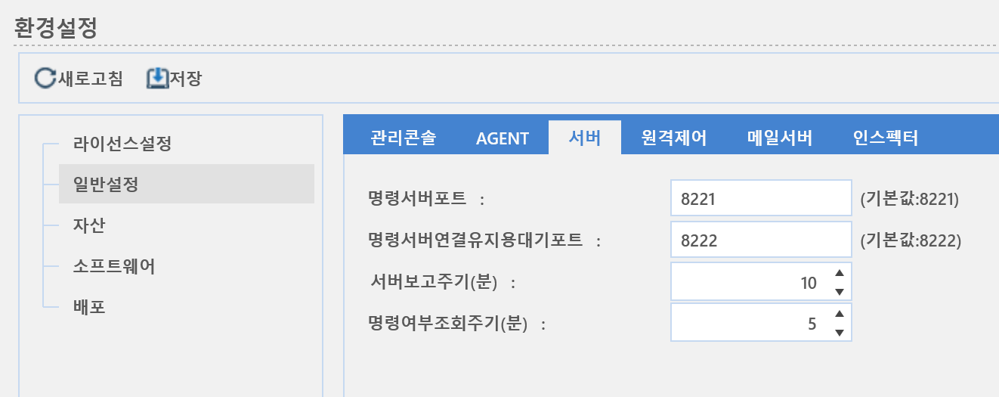

2-1-2-3. 서버
2-1-2-3. 서버
Source: https://www.sweeper.or.kr/etc/manual/2123.html
2-1-2-3. 서버
2. 홈 ›› 2-1. 환경설정 ›› 2-1-2. 일반설정 ››


서버 동작에 대한 환경설정을 할 수 있습니다.

- 명령서버 포트 : 명령서버와 에이전트간 통신하기 위한 대기 포트를 설정할 수 있습니다.
- 명령서버 연결유지용 대기 포트 : 공유기 등과 같은 NAT 장비 내부 에이전트와 통신하기 위한 연결유지용 대기 포트를 설정할 수 있습니다.
-
서버 보고 주기(분) : 서버의 상태 확인을 위한 보고 주기 시간 간격을 설정할 수 있습니다.
-
최대 설정시간 : 60분
-
명령여부조회주기(분) : 서버가 에이전트에 수행할 명령이 있는지 조회하는 주기를 설정합니다.
-
최대 설정시간 : 60분
© Copyright SWeeper Inc.. All Rights Reserved